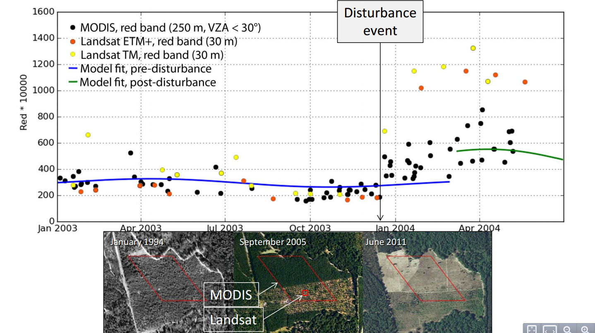

Intro to Landsat
Chris Holden
Thursday, March 26, 2015
History
- 1972 - 1983: Landsat 1-3 with Multispectral Scanner (MSS)
- 1982 - 2013: Landsat 4-5 with Thematic Mapper (TM)
- 1999 - present: Landsat 7 with Enhanced Thematic Mapper+ (ETM+)
- 2013 - present: Landsat 8 with Operational Land Imager (OLI)
 http://landsat.gsfc.nasa.gov/
http://landsat.gsfc.nasa.gov/
Receiving Stations
- Landsat MSS/TM had limited onboard tape archive
- Beam down data as it is acquired
- International receiving stations
- Landsat acquisition strategy
Draeger et al., 1997
Maine
Central Valley, California
Chiapas, Mexico
Cordoba, Colombia
Ucayali, Peru
Cambodia
Measurements
- "Passive Optical" remote sensing
- Landsat, MODIS, AVHRR, Quickbird, WorldView-2, etc
- Digital number, radiance, reflectance

http://www.ctahr.hawaii.edu/miuralab/projects/makaha/intro_RS.html
{kind=link}

Atmospheric Correction
- Data distributed as "Digital Numbers"
- Convert DNs to radiance using linear relation
- Convert TOA radiance to TOA reflectance
- Simulate effects of atmosphere and correct TOA reflectance to surface reflectance
Vegetation Reflectance

Vegetation Reflectance

Resolution
- 30x30m pixels
- 11 Landsat pixels in 1ha
- 6.25ha in one 250m MODIS pixel
- 100ha in one 1000m MODIS pixel
- "globally consistent characterizations that have local relevance and utility" (Hansen et al. 2013)
Resolution
Olofsson, Holden, and Woodcock, submitted